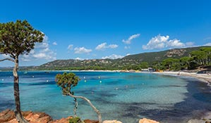
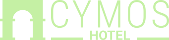

Porto Vecchio
 EN SAVOIR PLUS

BIENVENUE
CYMOS HOTEL
CORSE
Cette île est dotée de paysage naturels à vous couper le souffle et d'un riche patrimoine culturel et historique.
La Corse, c'est le mariage de la mer et du soleil, ce sont aussi les montagnes encore blanches de neige dominant les plages où l'on se baigne déjà, le célèbre maquis et de superbes forêts, des torrents, des alpages, des aiguilles. A chaque tournant s'offre une nouvelle vue et par delà chaque col, un autre monde.
Elle porte bien son nom : île de beauté. Plages paradisiaques et montagnes hérissées de pitons rocheux. Criques surmontées de côtes abruptes et minuscules villages accrochés à la montagne. Tours génoises posées sur la mer et menhirs endormis sous les oliviers. Respect de la nature et art de vivre corse.
LES ATTRACTIONS LOCALES
Entre mer et montagne, la Balagne appelée aussi "Le Jardin de la Corse", offre une nature d'une incroyable richesse qui a su être préservée. Vous pourrez découvrir le patrimoine historique de la région à travers la citadelle de Calvi, les Eglises de Calvi, Ile-Rousse, Lumio et des villages alentour.
Non loin de l'établissement vous avez le choix entre plusieurs plages, pour les amoureux de la mer différentes activités y sont proposées, plongée, balades en bateaux. Pour ceux qui préfèrent la nature, randonnées pédestres, balades à cheval ou sorties en 4x4. L'artisanat est aussi très présent entre huiles essentielles bio, charcuterie, fromages, huile d'olive et poterie.
LES POINTS FORTS
L'Hôtel Chez Charles se situe entre Calvi et l'Ile-Rousse dans le pittoresque village de Lumio, et bénéficie d'une vue imprenable sur le golfe de Calvi et sa citadelle.
La décoration de l'établissement se veut moderne et épurée. Avec ses 29 chambres, dont certaines disposent d'un balcon, vous trouverez tout le confort souhaité. Pour vos moments de détente une piscine à débordement, un lounge bar.
Et pour vos moments de plaisir le restaurant L'Oggi où vous découvrivrez à travers une cuisine d'actualité, tous les produits authentiques dont l'île a le secret.
- Vue sur mer
- Proche des 2 villes importantes de Balagne (Calvi et l'Ile Rousse)
- Situé dans un village typique de Balagne
- Restaurant Gastronomique avec une étoile au Michelin
- Piscine à débordement avec un restaurant grill
- Bar lounge
VOUS AVEZ DES QUESTIONS ?
Comment puis-je me rendre au lieu ?
La carte et les coordonnées sont indiquées dans le message de retour.
Vous recevrez également un e-mail de confirmation avec la carte de localisation.